Histology — Lecture 1
Microscopy + Cytology I | شرح عربي مبسط + اسئلة MCQ + نطق المصطلحات
Dr. Sarwat L. A. Abdel-Latif 2026/2027اهداف المحاضرة — Learning Objectives
- المقارنة بين المجهر الضوئي والمجهر الإلكتروني — Compare between Light and Electron Microscopes
- تصنيف العضيات السيتوبلازمية — Classify cytoplasmic organelles
- وصف التركيب الجزيئي لغشاء الخلية — Describe the molecular structure of the cell membrane
- تعداد النسبة المئوية لكل مكون من مكونات غشاء الخلية
- التعرف على تركيب ووظيفة غلاف الخلية — Cell coat
- ربط تركيب Mitochondria بوظيفتها
علم الأنسجة والمجهر ★★★
Histology & Microscopy — مهم جداما هو علم الأنسجة؟
علم الأنسجة Histology هو دراسة التركيب المجهري للأنسجة الطبيعية Microscopic Structure of normal tissue.
انواع المجاهر
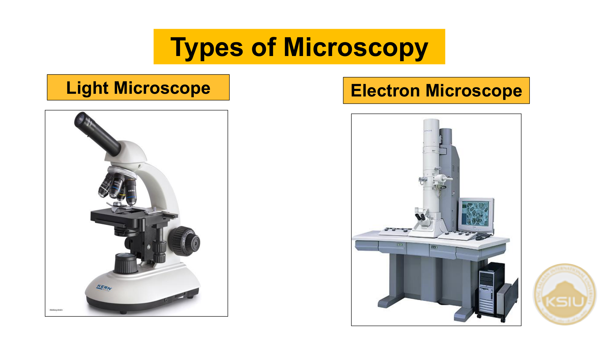
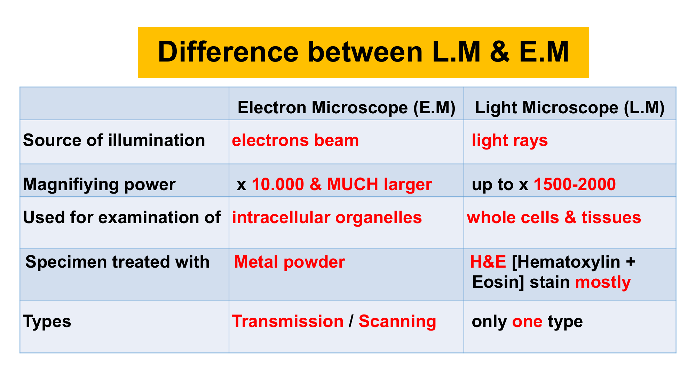
| وجه المقارنة | المجهر الضوئي Light Microscope (L.M) |
المجهر الإلكتروني Electron Microscope (E.M) |
|---|---|---|
| مصدر الإضاءة Source of illumination | Light rays Light rays | Electron beam Electron beam |
| قوة التكبير Magnifying power | حتى ×1500–2000 | ×10,000 وأكبر بكثير |
| الاستخدام Used for | الخلايا وWhole tissues Whole cells & tissues | فحص العضيات داخل الخلية Intracellular organelles |
| الانواع Types | نوع واحد |
Transmission E.M
Scanning E.M |
| معالجة العينة | صبغة H&E: Hematoxylin + Eosin | تعامل بمسحوق معدني Metal powder |
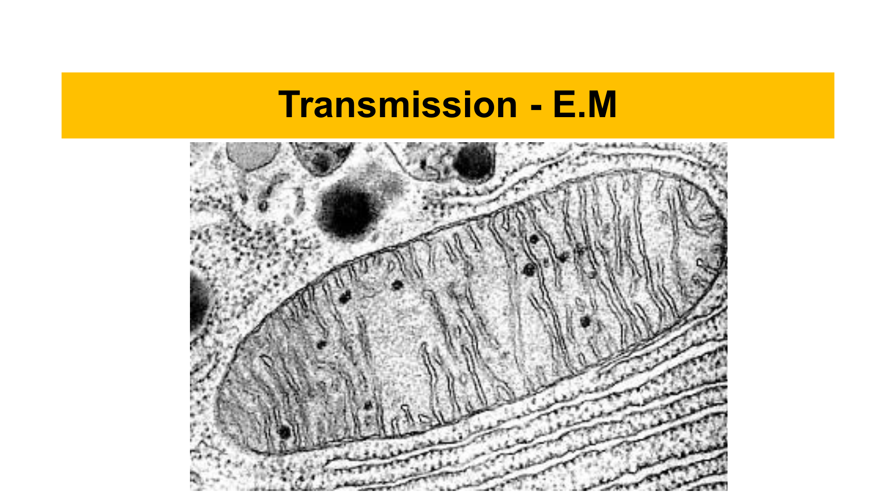
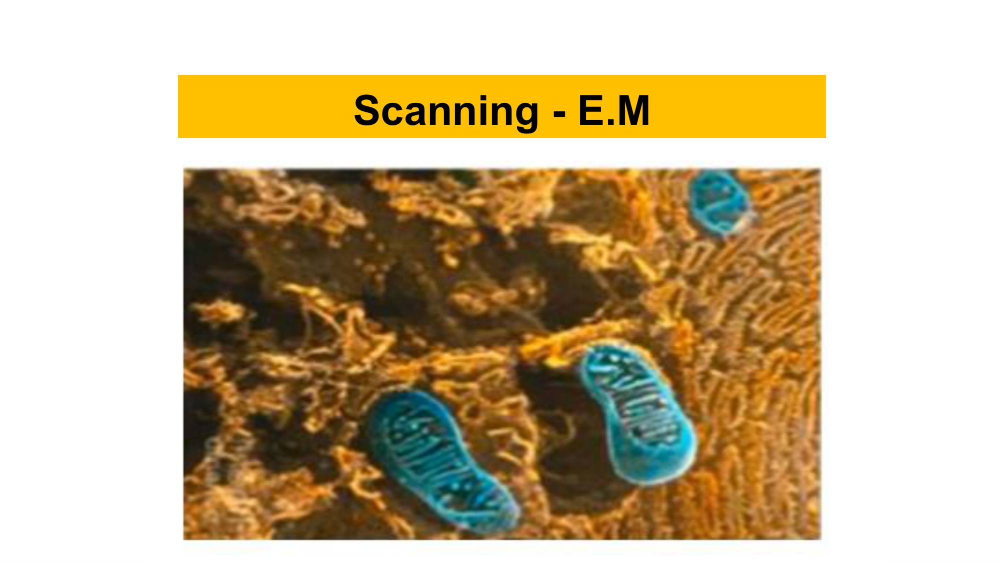
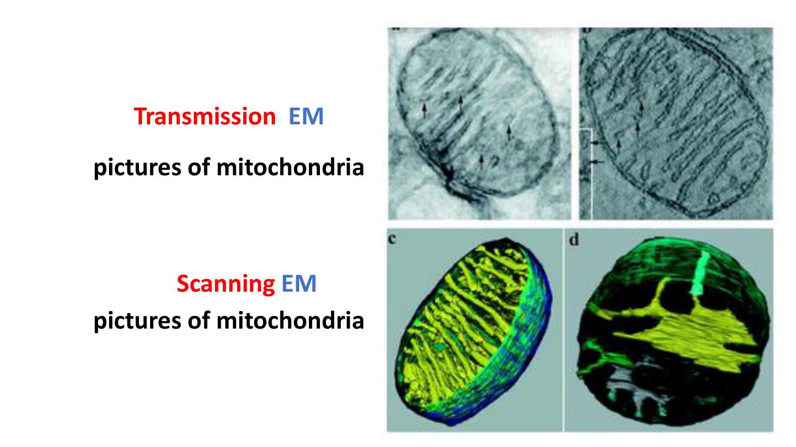
وحدات القياس Measurements & Units
- 1 cm = 10 mm (Millimeter)
- 1 mm = 1000 μm (Micrometer)
- 1 μm = 1000 nm (Nanometer)
MCQ Questions — Microscopy & Histology
ترتيب مستويات جسم الإنسان ★★★
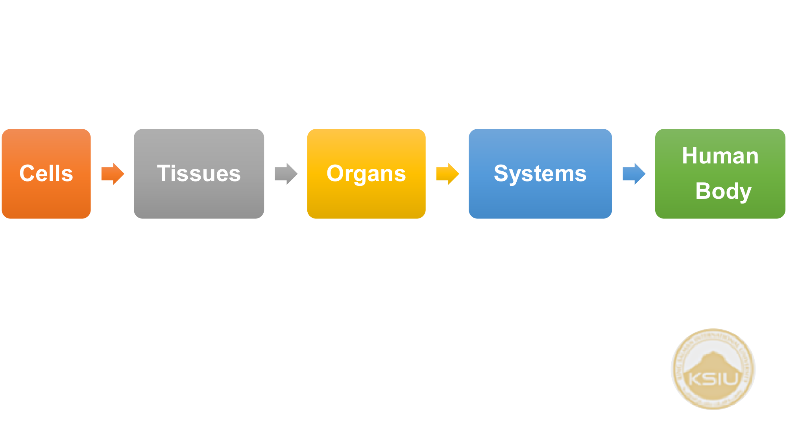
من الأصغر إلى الأكبر — From smallest to largest
MCQ Questions — Levels of Human Body Organization
الخلية ★★★
The Cell — Cytology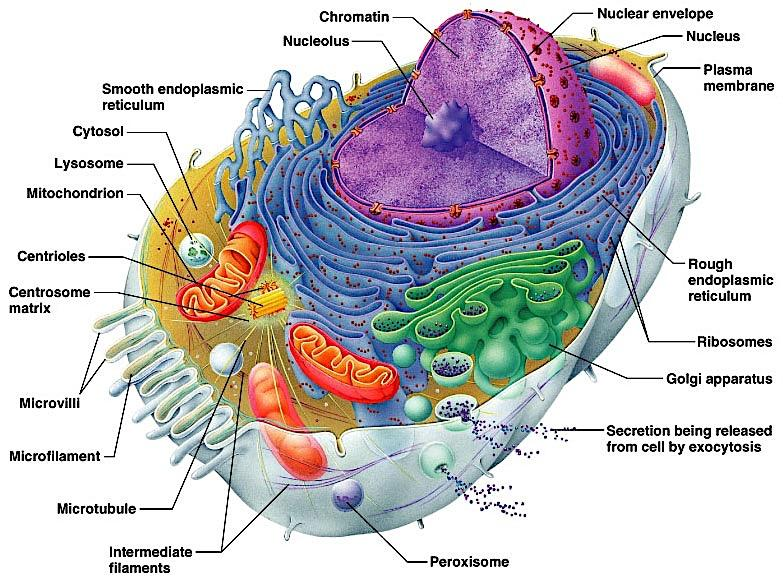
الخلية Cell هي الوحدة التركيبية والوظيفية Structural & Functional Unit لجسم الإنسان، ولها اشكال واحجام مختلفة.
مكونات الخلية الرئيسية
السيتوبلازم
يحتوي على المصفوفة والعضيات والاحتواءات
النواة والعضيات
Nucleus & Organelles
مكونات السيتوبلازم الثلاثة
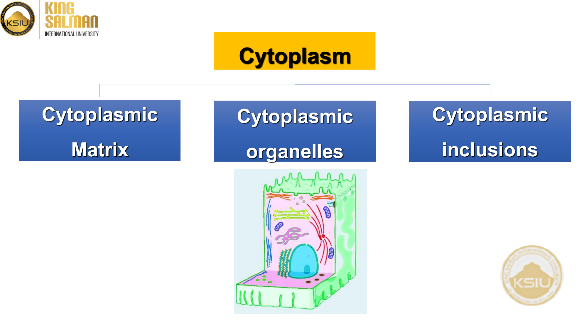
1. المصفوفة السيتوبلازمية
Cytoplasmic Matrix
محلول غروي Colloid solution يحتوي على:
- Proteins
- Carbohydrates
- Lipids
- Minerals
- Enzymes
2. العضيات السيتوبلازمية
Cytoplasmic Organelles
- حية Living
- دائمة Permanent
- ضرورية للعمليات الحيوية
- مثل: Mitochondria, Golgi
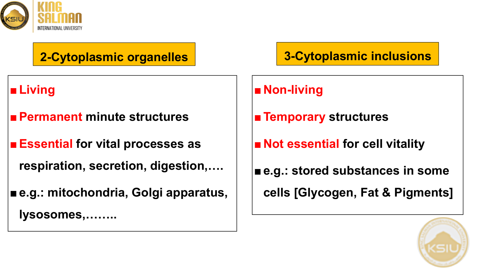
MCQ Questions — The Cell & Its Components
تصنيف العضيات السيتوبلازمية ★★★
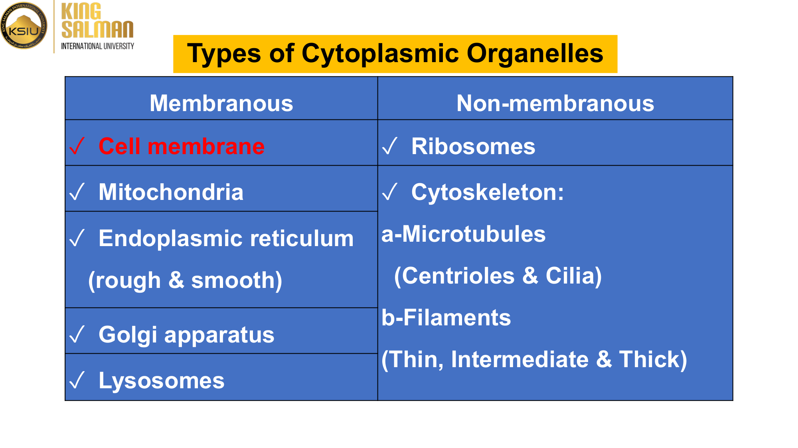
عضيات غشائية
Membranous Organelles
- غشاء الخلية Cell membrane
- Mitochondria Mitochondria
- الشبكة الاندوبلازمية الخشنة Rough ER
- الشبكة الاندوبلازمية الملساء Smooth ER
- Golgi apparatus Golgi apparatus
- Lysosomes Lysosomes
عضيات غير غشائية
Non-membranous Organelles
- Ribosomes Ribosomes
- الهيكل الخلوي
Cytoskeleton
- Microtubules: Centrioles & Cilia
- Filaments: Thin, Intermediate & Thick
MCQ Questions — Classification of Organelles
غشاء الخلية ★★★
Cell Membrane — سؤال مهم جدا للدكتورةبالمجهر الضوئي L.M
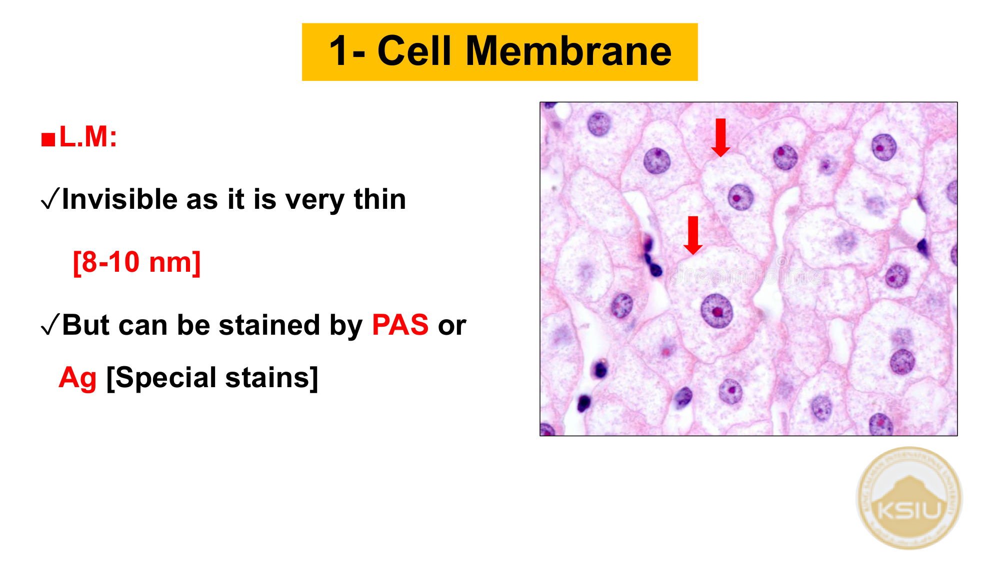
- غير مرئي لانه رفيع جدا — سمكه 8–10 nm
- يمكن اظهاره بصبغات خاصة: PAS او Ag (Silver)
بالمجهر الإلكتروني E.M
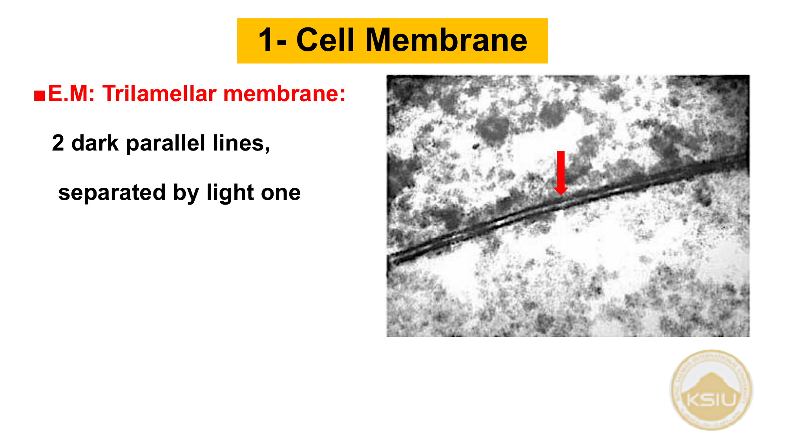
يظهر كغشاء ثلاثي الطبقات Trilamellar membrane
خطان داكنان متوازيان يفصل بينهما خط فاتح (2 dark parallel lines separated by light one).
التركيب الجزيئي لغشاء الخلية
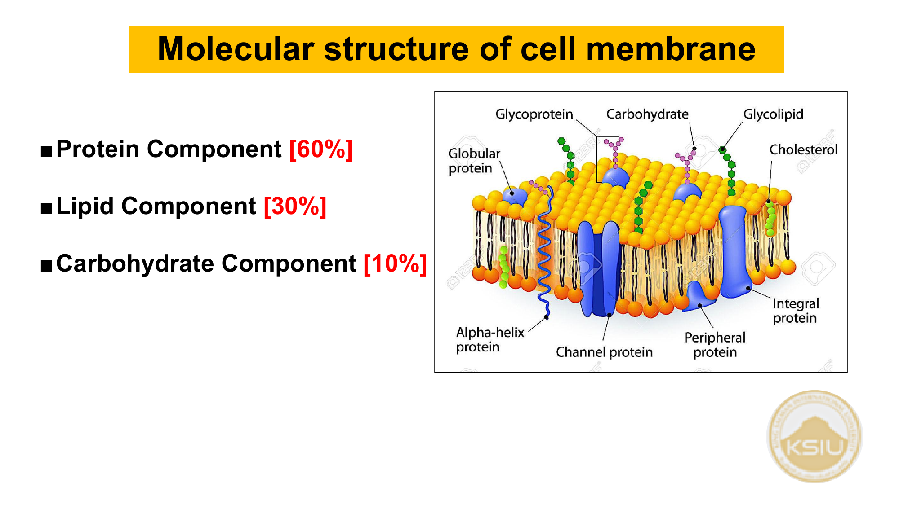
| المكون | النسبة | التفاصيل |
|---|---|---|
| البروتين Protein | 60% | اكبر مكون — مهم للوظائف |
| الدهون Lipid | 30% | ثنائي الطبقة الدهنية |
| الكربوهيدرات Carbohydrate | 10% | سكريات متعددة — Polysaccharides |
مكون الكربوهيدرات وتكوين Glycocalyx
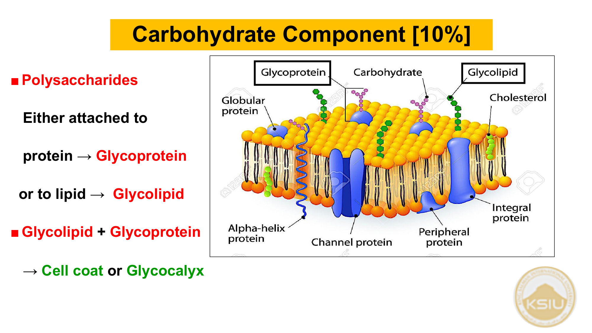
- السكريات المتعددة (Polysaccharides) + بروتين → Glycoprotein
- السكريات المتعددة (Polysaccharides) + دهون → Glycolipid
- Glycolipid + Glycoprotein → Cell coat / Glycocalyx
وظائف غشاء الخلية
- تنظيم مرور المواد الى داخل وخارج الخلية عبر:
- النقل السلبي Passive transport
- النقل النشط Active transport
- النقل الميسر Facilitated transport
- وظائف Cell coat — Glycocalyx:
- الحماية الميكانيكية للخلية Mechanical protection
- المناعة والحساسية الخلوية Cell immunity & allergy — من خلال المستقبلات (Receptors)
MCQ Questions — Cell Membrane
Mitochondria ★★★
Mitochondria — محطة الطاقة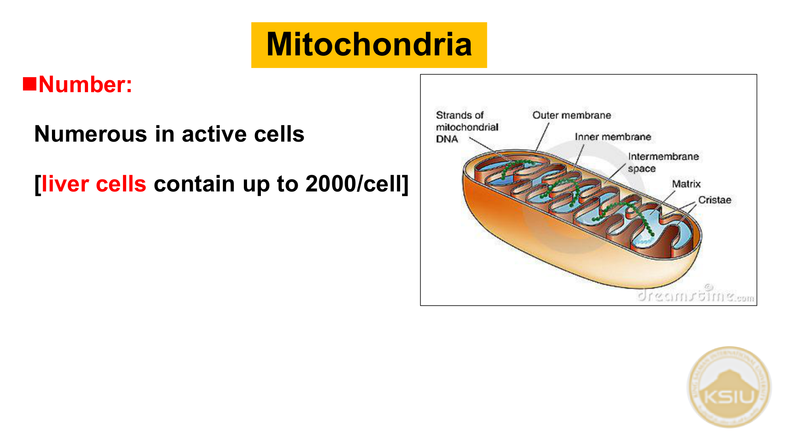
العدد
كثيرة في الخلايا النشطة. خلايا الكبد قد تحتوي على 2000 mitochondria/cell.
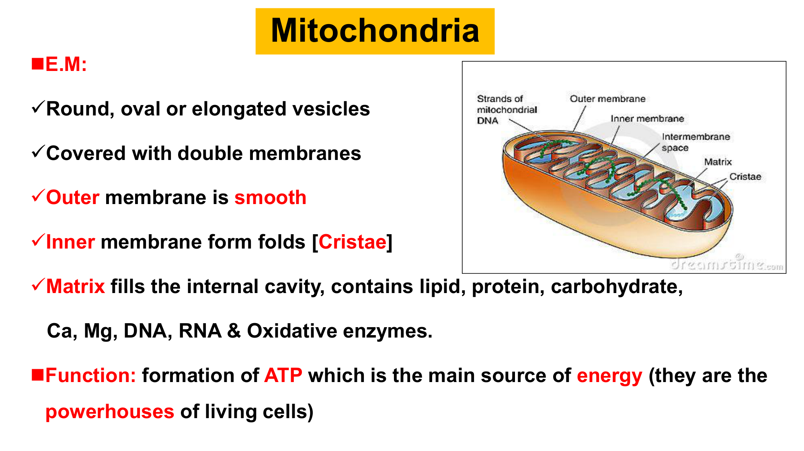
التركيب بالمجهر الإلكتروني E.M
- قد تكون مستديرة او بيضاوية او ممدودة Round, oval or elongated
- محاطة بغشائين Double membranes
- الغشاء الخارجي Outer membrane — املس
- الغشاء الداخلي Inner membrane — يكوّن طيات تسمى Cristae
- المصفوفة Matrix — تملا التجويف الداخلي، تحتوي على: Lipid, Protein, Carbohydrate, Ca, Mg, DNA, RNA, Oxidative enzymes
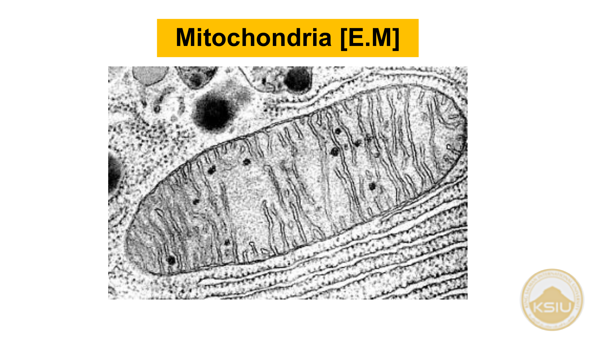
MCQ Questions — Mitochondria
الشبكة الإندوبلازمية ★★★
Endoplasmic Reticulum (ER)التعريف: شبكة من القنوات المترابطة Network of intercommunicating channels الموجودة في السيتوبلازم.
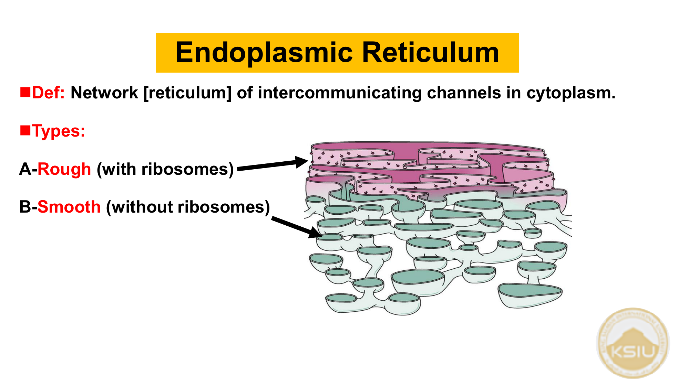
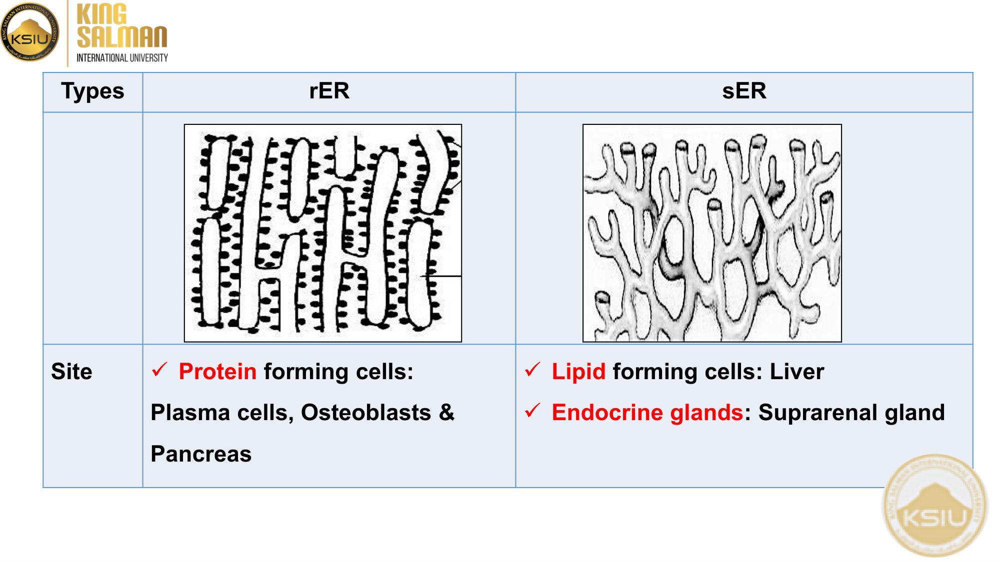
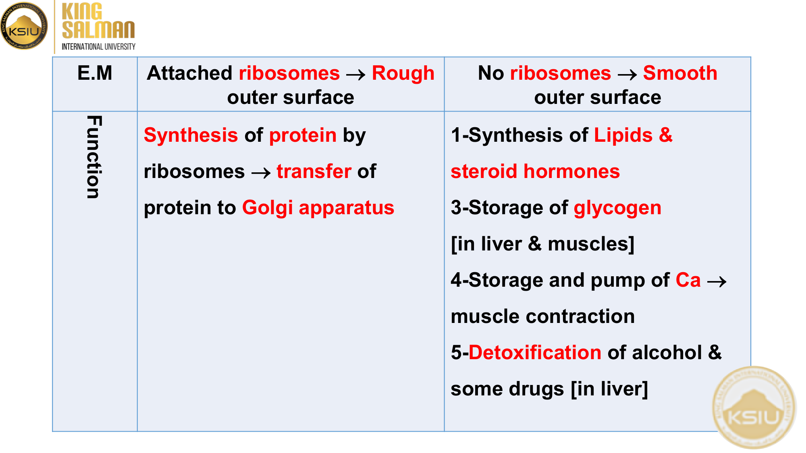
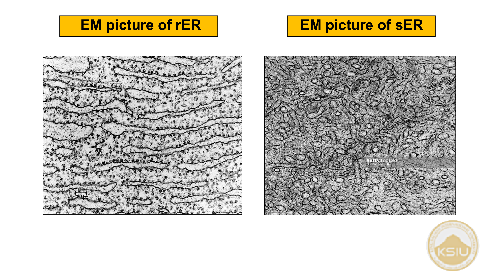
| وجه المقارنة | Rough ER (rER) | Smooth ER (sER) |
|---|---|---|
| بالـ E.M | عليه Ribosomes على السطح الخارجي | لا توجد عليه Ribosomes |
| يوجد في |
خلايا مكوِّنة للبروتين:
|
|
| الوظائف |
|
|
Rough ER = له Ribosomes = يصنع البروتين
Smooth ER = بدون Ribosomes = يصنع الدهون والهرمونات + Detoxification + Ca storage
MCQ Questions — Endoplasmic Reticulum
Golgi apparatus ★★★
Golgi Apparatus — الجهاز الإفرازي للخلية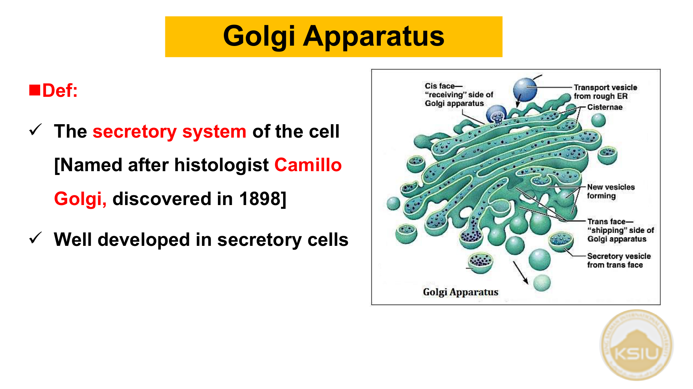
بالمجهر الضوئي L.M
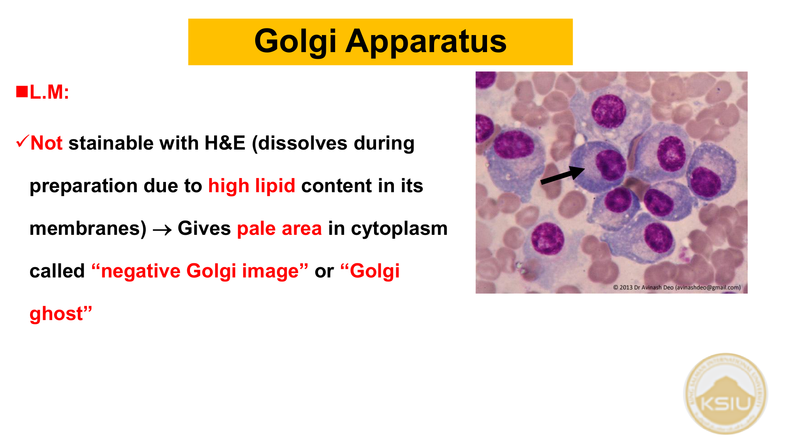
- لا يصطبغ بـ H&E لان احتواه الدهني العالي يذيبه اثناء التحضير
- يظهر كمنطقة شاحبة في السيتوبلازم تسمى: Negative Golgi image او Golgi ghost
بالمجهر الإلكتروني E.M
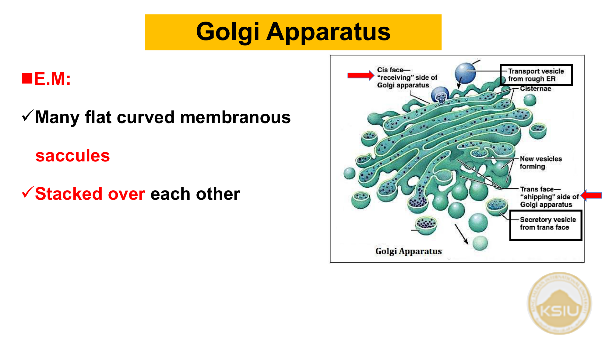
- اكياس غشائية مسطحة ومنحنية Flat curved membranous saccules
- متراصة فوق بعضها Stacked
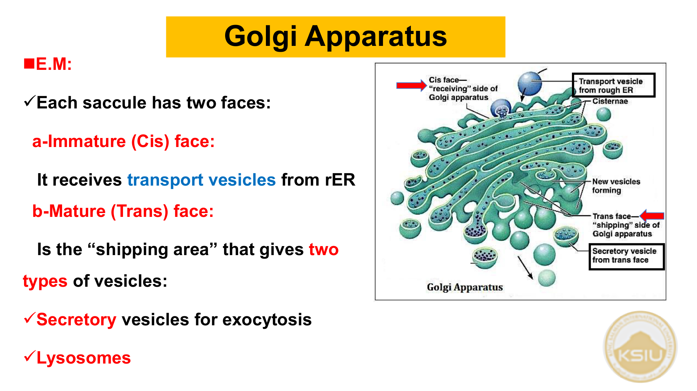
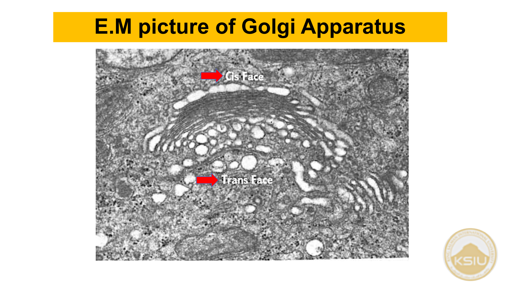
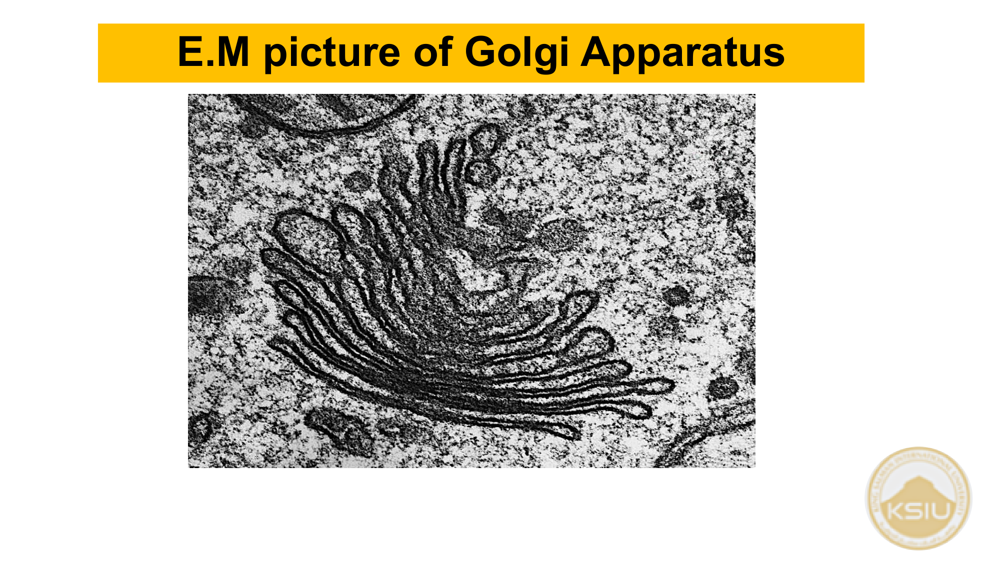
وظائف Golgi apparatus

- يكمل وظيفة rER: يعدّل البروتينات التي صنعها rER ثم يفرزها كـ Secretions
- Formation of Lysosomes وعزل انزيماتها
MCQ Questions — Golgi Apparatus
اسئلة الدكتورة المتوقعة ★★★
احفظ هذه الاسئلة بالإجابات🎯 أسئلة الدكتورة المقالية المحوّلة إلى أسئلة MCQ تفاعلية (Doctor Essay Questions as Interactive MCQs)
الامتحان العملي — Practical Slides ★★★
اضغط "اظهر الاجابة" بعد التعرف على الصورةاهم المصطلحات — Key Terminology
مع النطق والترجمة| المصطلح بالانجليزية | النطق | الترجمة العربية | صوت |
|---|---|---|---|
| Histology | his-TOL-uh-jee | علم الأنسجة | |
| Microscopy | my-KROS-kuh-pee | علم المجاهر | |
| Light Microscope (L.M) | LYT MY-kruh-skohp | المجهر الضوئي | |
| Electron Microscope (E.M) | ih-LEK-tron MY-kruh-skohp | المجهر الإلكتروني | |
| Transmission E.M | trans-MISH-un ee-em | المجهر الإلكتروني النافذ | |
| Scanning E.M | SKAN-ing ee-em | المجهر الإلكتروني الماسح | |
| Hematoxylin & Eosin (H&E) | hee-muh-TOK-sih-lin & EE-oh-sin | صبغة الهيماتوكسيلين والايوسين | |
| Cytology | sy-TOL-uh-jee | علم الخلية | |
| Cytoplasm | SY-toh-plaz-um | السيتوبلازم / هيولى الخلية | |
| Cytoplasmic Matrix | sy-toh-PLAZ-mik MAY-triks | المصفوفة السيتوبلازمية | |
| Cytoplasmic Organelles | sy-toh-PLAZ-mik or-guh-NELZ | العضيات السيتوبلازمية | |
| Cytoplasmic Inclusions | sy-toh-PLAZ-mik in-KLOO-zhunz | الاحتواءات السيتوبلازمية | |
| Membranous Organelles | MEM-bray-nus or-guh-NELZ | العضيات الغشائية | |
| Non-membranous Organelles | non-MEM-bray-nus or-guh-NELZ | العضيات غير الغشائية | |
| Cell Membrane | SEL MEM-brayn | غشاء الخلية | |
| Trilamellar Membrane | try-luh-MEL-ur MEM-brayn | غشاء ثلاثي الطبقات | |
| Glycocalyx | gly-koh-KAY-liks | غلاف السكر / غطاء الخلية | |
| Glycoprotein | gly-koh-PROH-teen | بروتين سكري | |
| Glycolipid | gly-koh-LIP-id | دهن سكري | |
| Mitochondria | my-toh-KON-dree-uh | Mitochondria | |
| Cristae | KRIS-tee | الطيات الداخلية للميتوكوندريا | |
| Mitochondrial Matrix | my-toh-KON-dree-ul MAY-triks | مصفوفة Mitochondria | |
| ATP (Adenosine Triphosphate) | ay-dee-uh-SEEN try-FOS-fayt | ثلاثي فوسفات الادينوسين — مخزن الطاقة | |
| Endoplasmic Reticulum (ER) | en-doh-PLAZ-mik reh-TIK-yuh-lum | الشبكة الاندوبلازمية | |
| Rough ER (rER) | ruf en-doh-PLAZ-mik reh-TIK-yuh-lum | الشبكة الاندوبلازمية الخشنة | |
| Smooth ER (sER) | smoothh en-doh-PLAZ-mik reh-TIK-yuh-lum | الشبكة الاندوبلازمية الملساء | |
| Ribosomes | RY-boh-sohmz | Ribosomes | |
| Golgi Apparatus | GOL-jee ap-uh-RAY-tus | Golgi apparatus | |
| Negative Golgi Image | NEG-uh-tiv GOL-jee IM-ij | الصورة السلبية لجولجي | |
| Lysosomes | LY-soh-sohmz | Lysosomes — عضيات الهضم | |
| Cytoskeleton | sy-toh-SKEL-ih-ton | الهيكل الخلوي | |
| Microtubules | my-kroh-TYOOB-yoolz | الانيبيبات الدقيقة | |
| Centrioles | SEN-tree-ohlz | المريكزات | |
| Cilia | SIL-ee-uh | الاهداب | |
| Filaments | FIL-uh-ments | الخيوط البروتينية | |
| Exocytosis | ek-soh-sy-TOH-sis | الإخراج الخلوي | |
| Secretory Vesicles | SEE-kruh-tor-ee VES-ih-kulz | الحويصلات الإفرازية | |
| Cis face | SIS fayss | الوجه غير الناضج (استقبال) | |
| Trans face | TRANZ fayss | الوجه الناضج (شحن وإرسال) | |
| Detoxification | dee-tok-sih-fih-KAY-shun | ازالة السمية | |
| Passive Transport | PAS-iv TRANS-port | النقل السلبي (بدون طاقة) | |
| Active Transport | AK-tiv TRANS-port | النقل النشط (يحتاج طاقة) | |
| Facilitated Transport | fuh-SIL-ih-tay-tid TRANS-port | النقل الميسر | |
| Intracellular Organelles | in-truh-SEL-yoo-ler or-guh-NELZ | العضيات داخل الخلية | |
| Cell coat | SEL koht | غلاف الخلية | |
| Camillo Golgi | kuh-MIL-oh GOL-jee | العالم الذي اكتشف Golgi apparatus (1898) |